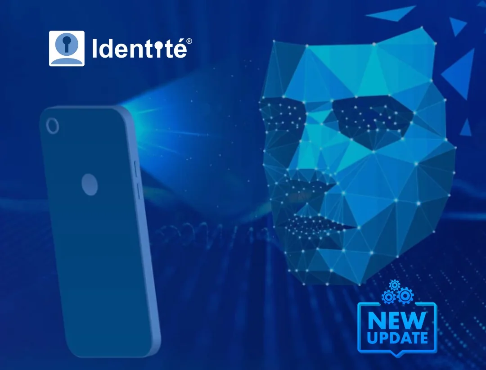

The new PCI-DSS 4.0 guidelines have upgraded requirements and Multi-Factor Authentication (MFA) recommendations. I found a few notable changes that will help clarify its impact on your organization. I also found that the guidance provided next to each requirement has been expanded in more detail and provides better examples to aid compliance.
What type of user and how many authentication factors are required?
PCI-DSS 3.2.1 and the PCI Information Supplement for Multi-Factor Authentication, the three types of authentication are something you know, something you have, and something you are.
PCI-DSS 3.2.1 required all users with access to the CDE or the network where the CDE resided to employ only one of those factors. Administrators and 3rd party vendors/contractors were the only users required to utilize two different types of authentication.
PCI-DSS 4.0, section 8.4.2, now specifies that all users must use at least two types of authentication. It also notes that the users can't use two of the same type, such as something a user knows. SMS OTP or codes generated from authenticator apps cannot be paired with the traditional password. If a password is used, then something a user has or something a user is -must accompany the password.
When do I need to comply with PCI-DSS 4.0?
PCI-DSS 4.0 was released in March of 2022 and will supersede the guidance in PCI-DSS 3.2.1 in March 2024. Compliance audits will begin in March 2025. While these dates seem a little far out, considering the time to secure a budget, research, procure and implement new tools can take well over a year. Retailers often have limited windows of implementation due to the seasonal IT lockdowns that support various high-volume buying periods.
How can PasswordFree® for Workforce MFA help?
User friction is one of the most challenging things to address with any MFA tool. Legacy MFA tools were primarily used by users in IT, who had a higher propensity to learn how to use these tools. However, PCI-DSS 4.0 applies to non-IT users when accessing the Cardholder Data Environment (CDE). PasswordFree® MFA for Workforce is designed to allow users to adapt naturally and not require extra steps to execute MFA. Fewer steps and keystrokes are needed. The user can simply look, click, or tap to execute three different types of authentication – something a user knows, something a user has and something a user is.
PCI-DSS 4.0, section 8.5.1, specifies that the MFA cannot be susceptible to replay attacks. This requirement invalidates a large number of existing and legacy MFA implementations. PasswordFree® MFA for Workforce is resistant to replay attacks, phishing, impersonation, man-in-middle, and browser-in-browser attacks. It uses patented Full Duplex Authentication® (FDA), which not only authenticates the user but also requires the authenticating service to be authenticated by the user before the user exposes any tokens.

While security tokens such as FIDO2 ensure that the user is executing the strongest authentication proof to the authenticating service, the user has additional protection with FDA. An example might be a fake email or dialogue asking users to renew their security token. The user's existing token is required to get a new token. With the bad actor in control of the dialogue, the new token appears to be delivered to the user. However, the bad actor has now been registered with the new token. FDA prevents this type of account takeover because the user's authenticating app doesn't complete the two-way authentication requirement.
Summary
Knowledge-based authentication factors have always been the weakest; additional factors were added to strengthen authentication, such as something a user has and something a user is. There are different ways to implement those other factors, and unfortunately, most have required the user to perform additional and cumbersome tasks to execute them. While PCI-DSS 4.0 doesn't require all users with access to the CDE to use MFA until March 31, 2025, it doesn't mean they can't start doing it today. There is no good reason for any user not to use MFA everywhere. PasswordFree™ MFA makes it easy and natural for any user to execute phishing-resistant MFA.
For more information about Workforce Passwordless Authentication, please visit us at: https://www.identite.us/workforcepasswordlessauthentication.